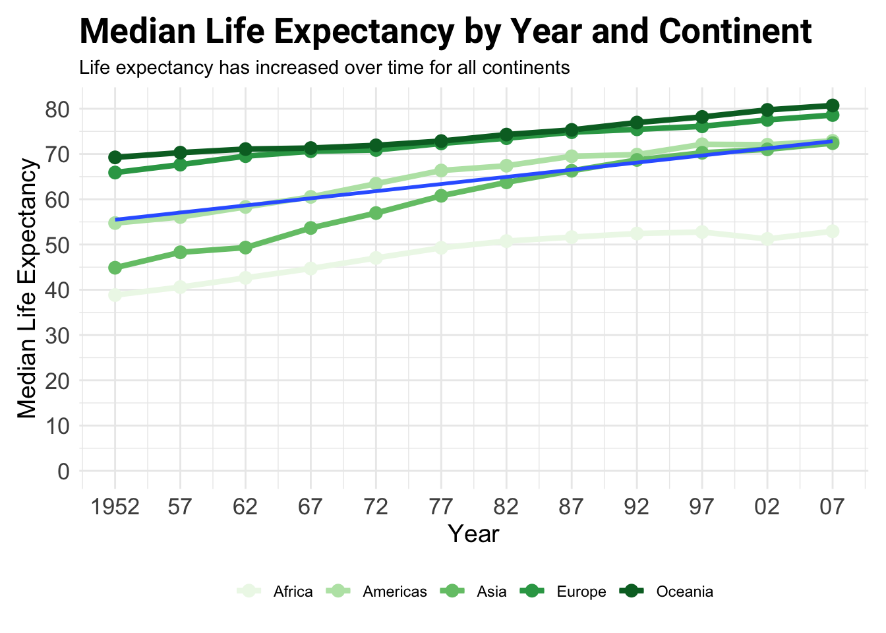

library(tidyverse)
library(gapminder)
gap <- gapminderAnalysis of Life Expectancy by Year and Continent
Introduction
This document provides an analysis of median life expectancy changes over time across different continents using the Gapminder dataset. We’ll explore data manipulation with dplyr and visualization with ggplot2.
In this analysis, we’ve journeyed through the exploration of the Gapminder dataset to understand trends in life expectancy across different continents over several decades. Our findings highlight significant increases in median life expectancy, reflecting global improvements in health care, technology, and living standards. The visualizations created through ggplot2 provide a clear and impactful representation of these trends, showcasing the power of data visualization in storytelling and analysis.
The use of tidyverse tools, particularly dplyr and ggplot2, demonstrates their utility in managing and displaying complex datasets effectively. This exercise has not only reinforced the importance of thoughtful data analysis in understanding world trends but also the versatility of R in statistical computing and graphics.
Libraries and Data
First, we load necessary R libraries and the Gapminder data.
Data Exploration
glimpse(gap)Rows: 1,704
Columns: 6
$ country <fct> "Afghanistan", "Afghanistan", "Afghanistan", "Afghanistan", …
$ continent <fct> Asia, Asia, Asia, Asia, Asia, Asia, Asia, Asia, Asia, Asia, …
$ year <int> 1952, 1957, 1962, 1967, 1972, 1977, 1982, 1987, 1992, 1997, …
$ lifeExp <dbl> 28.801, 30.332, 31.997, 34.020, 36.088, 38.438, 39.854, 40.8…
$ pop <int> 8425333, 9240934, 10267083, 11537966, 13079460, 14880372, 12…
$ gdpPercap <dbl> 779.4453, 820.8530, 853.1007, 836.1971, 739.9811, 786.1134, …Data Summarization
We summarize the data to calculate the median life expectancy, population, and GDP per capita by year and continent.
gap_1 <- gap %>%
group_by(year, continent) %>%
summarise(
med_lifeExp = median(lifeExp),
med_pop = median(pop),
med_gdpPercap = median(gdpPercap),
.groups = 'drop'
)Year Breaks and Labels
We create breaks and labels for the year variable to be used in the visualization.
year_breaks <- seq(1952, 2007, 5)
year_labels <- c("1952", sapply(year_breaks[-1], function(x) substr(as.character(x), 3, 4)))Plotting
Creating a plot of median life expectancy by year and continent.
ggplot(gap_1, aes(x = year, y = med_lifeExp, color = continent)) +
geom_line(size = 1.5) +
geom_point(size = 3) +
expand_limits(y = 0) +
labs(
title = "Median Life Expectancy by Year and Continent",
subtitle = "Life expectancy has increased over time for all continents",
x = "Year",
y = "Median Life Expectancy"
) +
theme_minimal() +
theme(
plot.title = element_text(size = 20, face = "bold", family = "Roboto", hjust = 0),
legend.position = "bottom",
legend.title = element_blank(),
axis.title = element_text(size = 14),
axis.text.x = element_text(size = 13),
axis.text.y = element_text(size = 13),
plot.margin = margin(t = 10, r = 10, b = 10, l = 10, unit = "pt")
) +
scale_color_brewer(palette = "Set4") +
scale_x_continuous(breaks = year_breaks, labels = year_labels) +
scale_y_continuous(breaks = seq(0, 90, 10)) +
geom_smooth(method = "lm", se = FALSE, aes(group = 1))`geom_smooth()` using formula = 'y ~ x'
Thank you
Thank you for taking the time to explore this analysis with me. I hope it has provided you with valuable insights and enhanced your understanding of data analysis techniques in R. Whether you are a student, a professional, or simply a data enthusiast, I appreciate your interest and engagement.
If you have any questions, suggestions, or comments, please feel free to reach out or contribute to this project. Your feedback is immensely valuable as it helps improve the quality of content and encourages a collaborative and learning environment.
Made with ❤️ by Mohammed Al haqbani